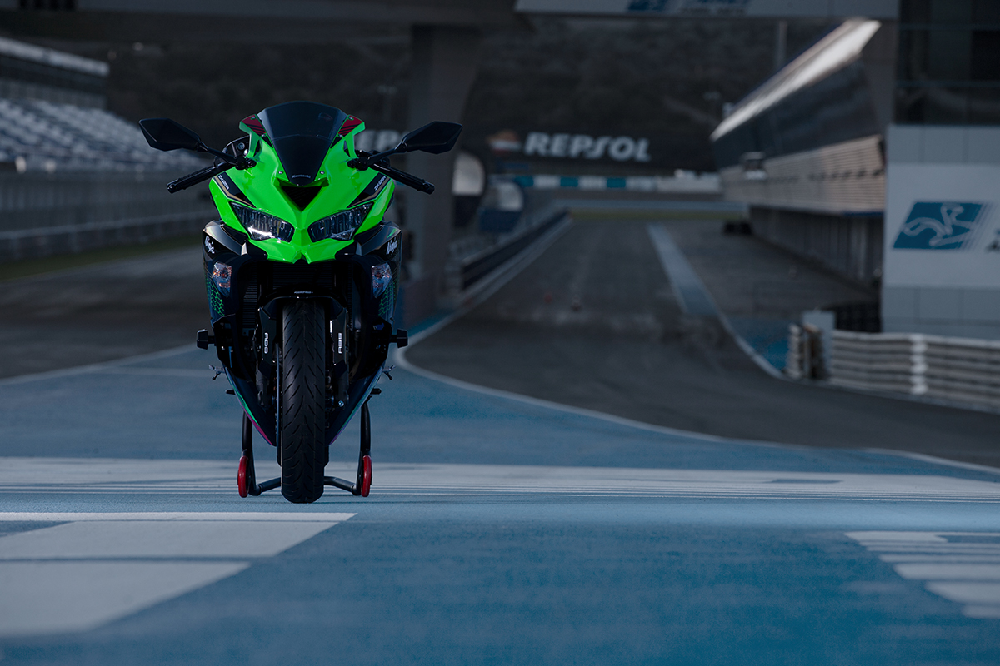
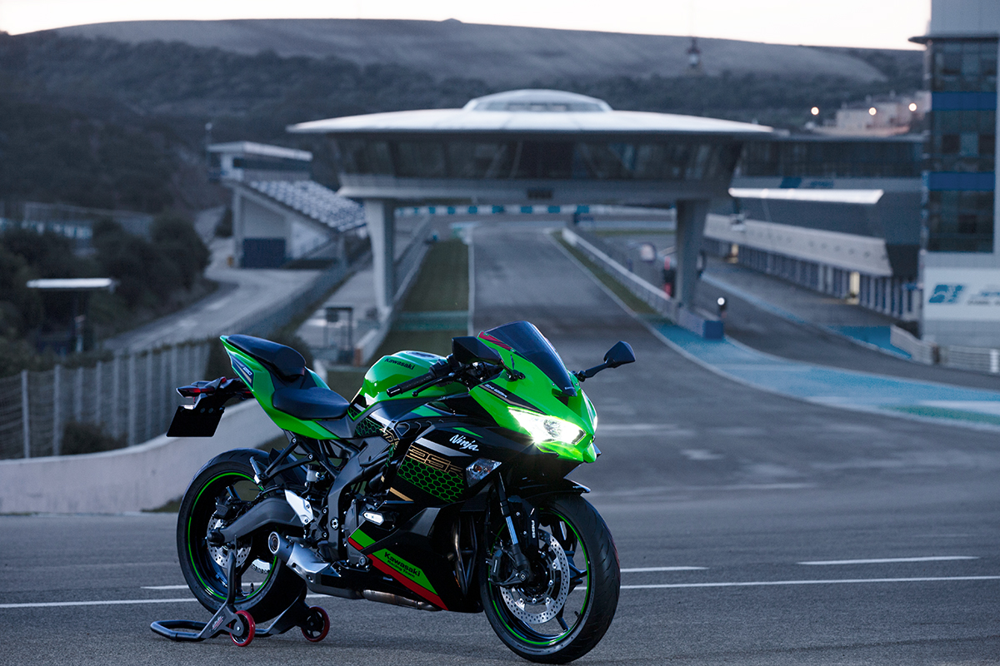
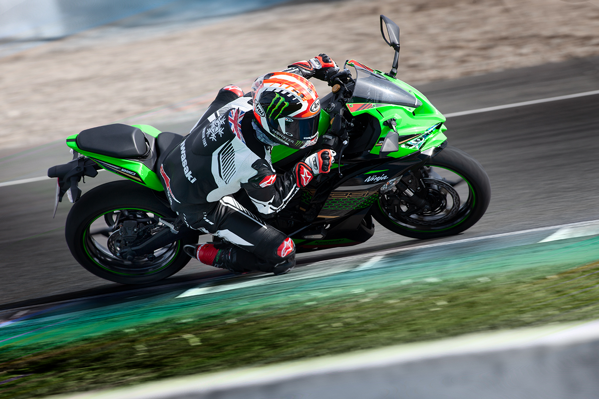
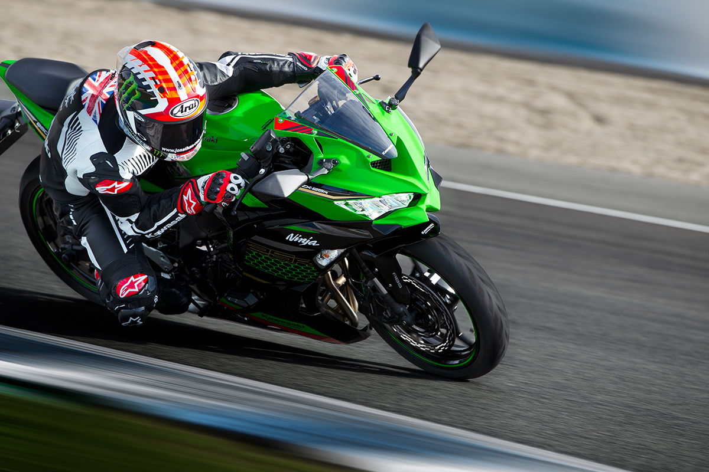

Kawasaki Ninja ZX-25R ABS SE adalah sebuah sepeda motor sport bermesin 249 cc dengan konfigurasi 4 silinder segaris yang diproduksi oleh Kawasaki di Indonesia dan Thailand sebagai penerus dari Ninja ZX-2R/ZXR250 yang diproduksi antara tahun 1988 dan 1997. Sepeda motor ini pertama kali diperkenalkan di Tokyo Motor Show 2019 dan diluncurkan pada tanggal 10 Juli 2020. ABS SE sendiri adalah tipe special edition dari Ninja ZX-25R series yang memiliki beberapa kelebihan dari tipe standarnya.
Spesifikasi
Kawasaki Ninja ZX-25R hadir dengan banyak fitur mumpuni yang membuatnya menjadi jawara motorsport kelas 250cc. Beberapa inovasi dilakukan Kawasaki untuk menciptakan motor ini. Berikut adalah spesifikasi dari Kawasaki Ninja ZX-25R ABS SE.
Technology
| Teknologi Manajemen Mesin | Teknologi Manajemen Sasis |
|---|---|
| Assist & Slipper Clutch | ABS (Anti-Lock Brake System) |
| Economical Riding Indicator | Horizontal Back-Link Rear Suspension |
| Electrocin Throttle Valves | |
| KQS (Kawasaki Quick Shifter) | |
| KTRC (Kawasaki Traction Control) | |
| Power Modes |
Power
| Jenis Mesin | Liquid-cooled, 4-stroke In-Line Four |
|---|---|
| Sistem Pengapian | Digital |
| Kopling | Wet multi-disc, manual |
| Power Maksimum | 37.5 kW {51 PS} / 15,500 rpm (with Ram Air) |
| Torsi Maksimum | 22.9 Nm {2.3 kgfm} / 14,500 rpm |
| Volume Silinder | 249.8 cc |
| Sistem Katup | DOHC, 16 valves |
| Sistem Pengapian | Fuel injection: ø30 mm x 4 |
| Transmission | 6-speed, return |
Performance
| Suspensi Depan | ø37 mm inverted fork (SFF-BP) |
|---|---|
| Suspensi Belakang | Horizontal Back-link, gas-charged shock with spring preload adjustability |
| Rem Depan | Single semi-floating ø310 mm disc |
| Rem Belakang | Single ø220 mm disc |
| Roda Depan | 110/70R17M/C (54H) |
| Roda Belakang | 150/60R17M/C (66H) |
| Panjang x Lebar x Tinggi | 1,980 x 750 x 1,110 mm |
Color Variant
GALERI



